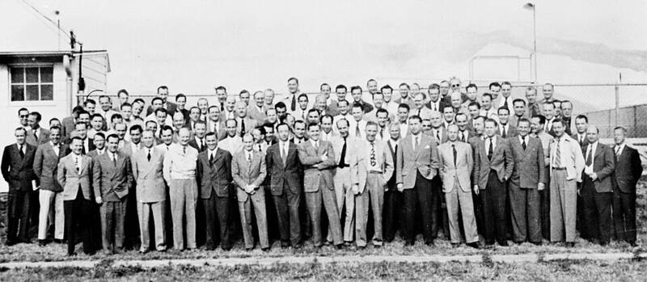

Operation Paperclip rocket team
Huntsville, Alabama

Wernher von Braun's German rocket team moved here in 1950, building the rockets that led to the Saturn V. Confirmed program. 1
Open in the interactive Watcher
Related
- Wernher von Braun Person
Sources
- Operation Paperclip Wikipedia